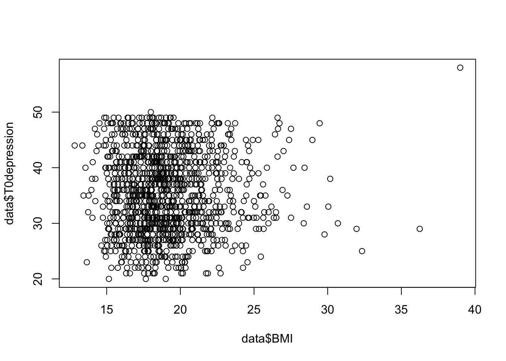

The following objects are masked from 'package:stats':
filter, lag
The following objects are masked from 'package:base':
intersect, setdiff, setequal, union
Code
library(readxl)library(ggplot2)library(MASS)
Attaching package: 'MASS'
The following object is masked from 'package:dplyr':
select
Introduction and background
The Chinese government implemented the one-child policy in 1979, which resulted in the increasing proportion of one-child families and the “four-two-one” family structure consisting of four grandparents, two parents, and one child. Despite being blessed with relatively more family and social resources, only children may face physical and socio-psychological problems during development, including an elevated risk for overweight and obesity and negative psychosocial consequences. Previous studies have shown that only children had a higher likelihood of overweight or obesity, compared with children who had one or more siblings. Over obesity, mental healthy is also interesting to explore that how it is related to overweight/obesity, as well as sib-size, in young adolescents affects mental health.。
research questions
Does obesity positively related to mental health?
What are factors that affects mental healthy?
Does sibling or obesity directly related to mental health?
key predictors
depression rate
sibling number
obesity rate
Family location, finance and education
hypothesis
Higher obesity rate increase the risk of depression
higher family income increase the rate of obesity
More sibling reduce the risk of both depression and anxiety.
In these hypothesis, the response variables are depression rate, axiety rate and BMI index. The explanatory variables can be factors listed below. Analysis is needed to identify the control variables. For exapmle, in hypothesis 2, family income is the explanatory varible and rate of obsity inidcated as BMI is response varible, the control varible may also be family financial situation.
# A tibble: 6 × 29
T0depres…¹ T0anx…² T1dep…³ T1anx…⁴ Height Weight WC HC SBP DBP FBG
<dbl> <dbl> <dbl> <dbl> <dbl> <dbl> <dbl> <dbl> <dbl> <dbl> <dbl>
1 31 35 41 35 153. 34.6 58 67 98 60 4.4
2 35 24 35 25 172. 46.1 63 78 110 70 3.9
3 31 34 37 26 146. 38.9 72 77.7 102 62 4.6
4 27 31 42 35 162. 46.8 62 80 116 80 4.5
5 31 26 49 33 154. 36.4 56 72 90 60 4.2
6 30 28 47 32 164. 40.6 55 73 102 70 3.7
# … with 18 more variables: TC <dbl>, TG <dbl>, `HDL-C` <dbl>, `LDL-C` <dbl>,
# BMI <dbl>, WHR <dbl>, WtHR <dbl>, `Family location` <dbl>,
# `Number of siblings` <dbl>,
# `How much time do you spend with your father in elementary school?` <dbl>,
# `How much time do you spend with your mother in elementary school?` <dbl>,
# `Father’s education level` <dbl>, `Mother’s education level` <dbl>,
# `Family financial situation` <dbl>, `Sleeping hours` <dbl>, …
Code
sum(is.na(data))
[1] 728
Code
plot(data$T0depression~data$BMI)

This dataset including 1348 variables and 29 columns. there are 728 NA in this data set. all variables was presented as numberic data. descriptive data was also presented as degrees such as education level, family financial situation and depression rate. By pre-plotting depression rate vs BMI, we can see that some ouliers may need to deal with and there is no siginifcant disrtibution on graph. More data processing is needed in future process.
data$NS <-factor(data$NS)t.test(T1depression ~ NS, data = data)
Welch Two Sample t-test
data: T1depression by NS
t = -2.6337, df = 1252.5, p-value = 0.008551
alternative hypothesis: true difference in means between group 1 and group 2 is not equal to 0
95 percent confidence interval:
-2.0381547 -0.2979518
sample estimates:
mean in group 1 mean in group 2
38.38127 39.54932
In this case, the sample estimate of the correlation coefficient (rho) is 0.1184734, indicating a positive correlation between T0depression and NS. However, the p-value of the test is 0.008575, which is less than 0.05, suggesting that the correlation is statistically significant at a 5% level of significance.
Therefore, we can conclude that there is a significant positive correlation between the number of siblings (NS) and the degree of depression in this dataset.
By carrying out a Welch t-test, the group with more siblings have higher depression index and p value <0.05 indicates the result is siginifcant. (Not sure why the confident interval is negtive and none of the data was negative. )
Code
ggplot(data, aes(x = NS, y = T1anxiety)) +geom_point() +geom_smooth(method ="lm", se =FALSE)
Warning in cor.test.default(data$T1anxiety, data$NS, method = c("spearman")):
Cannot compute exact p-value with ties
Spearman's rank correlation rho
data: data$T1anxiety and data$NS
S = 343033890, p-value = 8.796e-09
alternative hypothesis: true rho is not equal to 0
sample estimates:
rho
0.1559788
Code
fit3<-lm(T1anxiety ~ NS, data = data)summary(fit3)
Call:
lm(formula = T1anxiety ~ NS, data = data)
Residuals:
Min 1Q Median 3Q Max
-13.906 -3.997 0.003 3.003 33.003
Coefficients:
Estimate Std. Error t value Pr(>|t|)
(Intercept) 30.0883 0.5185 58.030 < 2e-16 ***
NS 1.9091 0.3411 5.597 2.64e-08 ***
---
Signif. codes: 0 '***' 0.001 '**' 0.01 '*' 0.05 '.' 0.1 ' ' 1
Residual standard error: 6.207 on 1344 degrees of freedom
(2 observations deleted due to missingness)
Multiple R-squared: 0.02278, Adjusted R-squared: 0.02205
F-statistic: 31.32 on 1 and 1344 DF, p-value: 2.643e-08
others
Code
# Create the data frame for SAS and SDS scalessas_levels <-c("Normal", "Mild to Moderate", "Marked to Severe", "Extreme")sas_scores <-c("<45", "45-59", "60-74", ">=75")sas_table <-data.frame(Level = sas_levels, Score = sas_scores)sds_levels <-c("Normal", "Mild", "Moderate to Marked Major", "Severe or Extreme Major")sds_scores <-c("<50", "50-59", "60-69", ">=70")sds_table <-data.frame(Level = sds_levels, Score = sds_scores)# Print the SAS scale tablecat("Self-rating Anxiety Scale (SAS)\n")
Self-rating Anxiety Scale (SAS)
Code
print(sas_table)
Level Score
1 Normal <45
2 Mild to Moderate 45-59
3 Marked to Severe 60-74
4 Extreme >=75
Code
# Print the SDS scale tablecat("\nSDS scores (SDS)\n")
SDS scores (SDS)
Code
print(sds_table)
Level Score
1 Normal <50
2 Mild 50-59
3 Moderate to Marked Major 60-69
4 Severe or Extreme Major >=70
data$BMI_category <-cut(data$BMI, breaks =c(-Inf, 18.5, 24.9, 29.9, Inf),labels =c("Underweight", "Normal weight", "Overweight", "Obesity"))data$Depression_category <-cut(data$T1depression, breaks =c(0,45, 59,74,75),labels =c("Normal", "Mild", "Moderate to Marked Major", "Severe or Extreme Major"))# Plot the bar chart
Answers to the feedbacks on check in 1
Here are a few things you may want to work on in future steps: 1. Please provide more information of the dataset: what each variable means (e.g. WC, HC, SBP etc) and how it is measured. This is to make sure audiences understand your confounders. a table with explaination of abrivation is updated in data description
Since gender is one of your key predictors, you may consider using the interaction between gender and other key variables in the model to see whether gender influences the impact of other predictors. Also, seem I didn’t find the gender variable in the dataset you provided? Thanks for pointing out. Since gender is missiong, I will not use gender as a key predicor.
As you mentioned, there are some outliers in the data, especially the one on the top-right corner. This outlier can change the slope of the regression. Also, the relationship between BMI and depression is not very clear in the graph, as you mentioned, more data processing is needed. You can also try plotting different groups (e.g. gender, family location) in different colors to see if there’s any pattern.
Thanks for the comments, I will try to process the data this time and plot more patterns.
Questions need to be addressed
the varibles such as family locations or education level can be expressed either as rank or ordinal, as drawed below,it is hard to find a correlationship with this kind of varibles. How can i explore the relationship between an ordinal varible and a continuous varible?
as some of the continuous varibles can also converted to ordinal varibles, what would be some method or test good to find the relationship between them?
Code
#convert continuous varibles into categorical variblesdata$FL1 <-factor(sample(1:5, 1348, replace =TRUE), levels =1:5, labels =c("Rural", "Suburban", "Urban", "City", "Metropolis"))data$BMI_category <-cut(data$BMI, breaks =c(-Inf, 18.5, 24.9, 29.9, Inf),labels =c("Underweight", "Normal weight", "Overweight", "Obesity"))data$Depression_category <-cut(data$T1depression, breaks =c(0,45, 59,74,75),labels =c("Normal", "Mild", "Moderate to Marked Major", "Severe or Extreme Major"))#plotggplot(data, aes(x = FL1, y = BMI, fill = BMI_category)) +geom_bar(stat ="identity", position ="stack") +scale_fill_manual(values =c("#1b9e77", "#d95f02", "#7570b3", "#e7298a")) +xlab("Family location") +ylab("BMI") +ggtitle("BMI category and family location") +theme_bw()
---title: "Final Project "author: "Xiaoyan"description: "Template of course blog qmd file"date: "05/17/2023"format: html: toc: true code-fold: true code-copy: true code-tools: truecategories: - finalpart1---```{r}library(tidyr)library(dplyr)library(readxl)library(ggplot2)library(MASS)```# {.tabset}## Introduction and background The Chinese government implemented the one-child policy in 1979, which resulted in the increasing proportion of one-child families and the "four-two-one" family structure consisting of four grandparents, two parents, and one child. Despite being blessed with relatively more family and social resources, only children may face physical and socio-psychological problems during development, including an elevated risk for overweight and obesity and negative psychosocial consequences. Previous studies have shown that only children had a higher likelihood of overweight or obesity, compared with children who had one or more siblings. Over obesity, mental healthy is also interesting to explore that how it is related to overweight/obesity, as well as sib-size, in young adolescents affects mental health.。## research questions1. Does obesity positively related to mental health?2. What are factors that affects mental healthy?3. Does sibling or obesity directly related to mental health?## key predictors1. depression rate2. sibling number3. obesity rate4. Family location, finance and education## hypothesis1. Higher obesity rate increase the risk of depression2. higher family income increase the rate of obesity3. More sibling reduce the risk of both depression and anxiety. In these hypothesis, the response variables are depression rate, axiety rate and BMI index. The explanatory variables can be factors listed below. Analysis is needed to identify the control variables. For exapmle, in hypothesis 2, family income is the explanatory varible and rate of obsity inidcated as BMI is response varible, the control varible may also be family financial situation. ## data description### overlook of data```{r}data<-read_excel("/Users/cassie199/Desktop/23spring/603_Spring_2023-1/posts/_data/mentalhealth_data.xlsx")head(data)sum(is.na(data))plot(data$T0depression~data$BMI)```This dataset including 1348 variables and 29 columns. there are 728 NA in this data set. all variables was presented as numberic data. descriptive data was also presented as degrees such as education level, family financial situation and depression rate. By pre-plotting depression rate vs BMI, we can see that some ouliers may need to deal with and there is no siginifcant disrtibution on graph. More data processing is needed in future process.Modified column name and ```{r}variables <-c("Internalizing problem - Depression (SDS)", "Internalizing problem - Anxiety (SAS)", "Obesity parameters - BMI", "Obesity parameters - WC", "Obesity parameters - WHR","Obesity parameters - WHtR", "Biochemical parameters - TG", "Biochemical parameters - FBG","Biochemical parameters - TC", "Biochemical parameters - HDL-C", "Biochemical parameters - LDL-C","Blood pressure - SBP", "Blood pressure - DBP","Family location", "Number of siblings", " time spend with father in elementary school?", " time spend with mother in elementary school?", "Father’s education level", "Mother’s education level", "Family financial situation", "Sleeping hours", "Skipping breakfast", "Vigorous", "Moderate")abreviations <-c("Depression", "Anxiety", "BMI", "WC", "WHR", "WHtR", "TG", "FBG", "TC", "HDL-C", "LDL-C", "SBP", "DBP","FL", "NS", "TFE", "TME", "FEL", "MEL", "FS", "SL", "SB", "VG", "MD")cat("varible table\n")variable_table <-data.frame(variables, abreviations)variable_table```### parameter explaination```{r}# Create the data frame for BMI categoriesbmi_levels <-c("Underweight", "Normal Weight", "Overweight", "Obesity")bmi_values <-c("<18.5", "18.5-24.9", "25-29.9", ">=30")bmi_table <-data.frame(Category = bmi_levels, BMI = bmi_values)# Print the BMI category tablecat("\nBMI Categories\n")print(bmi_table)```## hypothesis test### 1. Higher obesity rate increase the risk of depressionIn order to ```{r}colnames(data)<-c("T0depression","T0anxiety","T1depression","T1anxiety","Height","Weight","WC","HC","SBP","DBP","FBG","TC","TG","HDL-C","LDL-C","BMI","WHR","WtHR","FL", "NS", "TFE", "TME", "FEL", "MEL", "FS", "SL", "SB","Vigorous","Moderate")ggplot(data, aes(x = BMI, y = T1depression)) +geom_point() +geom_smooth(method ="lm", se =FALSE)lm1<-lm(T1depression ~ BMI+NS+TFE+TME+FEL+MEL+FL+SL+SB, data = data)summary(lm1)plot(lm1)``````{r}lm2<-lm(T1depression ~ BMI+NS+TFE+FEL+SB, data = data)summary(lm2)par(mfrow =c(2,3))plot(lm2)lm3<-lm(T1depression ~ TFE, data = data)plot_data <-data.frame(Predicted_value =predict(lm3), Observed_value = data$T1depression[1:length(predict(lm3))])ggplot(plot_data, aes(x = Predicted_value, y = Observed_value)) +geom_point() +geom_abline(intercept =0, slope =1, color ="green")ggplot(data, aes(x = T1depression, y = SB)) +geom_point() +geom_smooth(method ="lm", se =FALSE)```### 2. higher family income increase the rate of obesity```{r}unique(data$FS)ggplot(data, aes(x = SL, y = BMI)) +geom_point() +geom_smooth(method ="lm", se =FALSE)summary(lm(BMI~FS+SL+SB, data = data))data$BMI_category <-cut(data$BMI, breaks =c(-Inf, 18.5, 24.9, Inf),labels =c("Underweight", "Normal weight", "Overweight"))data$BMI_rank <-as.factor(unclass(data$BMI_category))LR1<-polr(BMI_rank~SL+SB+FS, data = data, Hess =TRUE, method ="logistic")SUM1<-summary(LR1)coef(SUM1)exp(coef(SUM1))```### 3. More sibling reduce the risk of both depression and anxiety. ```{r}unique(data$NS)ggplot(data, aes(x = NS, y = T1depression)) +geom_point() +geom_smooth(method ="lm", se =FALSE)ggplot(data, aes(x = NS, y = T1depression)) +geom_boxplot()data$NS <-factor(data$NS)t.test(T1depression ~ NS, data = data)```In this case, the sample estimate of the correlation coefficient (rho) is 0.1184734, indicating a positive correlation between T0depression and NS. However, the p-value of the test is 0.008575, which is less than 0.05, suggesting that the correlation is statistically significant at a 5% level of significance.Therefore, we can conclude that there is a significant positive correlation between the number of siblings (NS) and the degree of depression in this dataset.By carrying out a Welch t-test, the group with more siblings have higher depression index and p value <0.05 indicates the result is siginifcant. (Not sure why the confident interval is negtive and none of the data was negative. )```{r}ggplot(data, aes(x = NS, y = T1anxiety)) +geom_point() +geom_smooth(method ="lm", se =FALSE)data$NS <-as.numeric(data$NS)cor.test(data$T1anxiety,data$NS, method =c("spearman"))fit3<-lm(T1anxiety ~ NS, data = data)summary(fit3)```### others```{r}# Create the data frame for SAS and SDS scalessas_levels <-c("Normal", "Mild to Moderate", "Marked to Severe", "Extreme")sas_scores <-c("<45", "45-59", "60-74", ">=75")sas_table <-data.frame(Level = sas_levels, Score = sas_scores)sds_levels <-c("Normal", "Mild", "Moderate to Marked Major", "Severe or Extreme Major")sds_scores <-c("<50", "50-59", "60-69", ">=70")sds_table <-data.frame(Level = sds_levels, Score = sds_scores)# Print the SAS scale tablecat("Self-rating Anxiety Scale (SAS)\n")print(sas_table)# Print the SDS scale tablecat("\nSDS scores (SDS)\n")print(sds_table)# Create sample dataplot(data$BMI~data$T1depression)plot(data$T1depression~data$FL)data$BMI_category <-cut(data$BMI, breaks =c(-Inf, 18.5, 24.9, 29.9, Inf),labels =c("Underweight", "Normal weight", "Overweight", "Obesity"))data$Depression_category <-cut(data$T1depression, breaks =c(0,45, 59,74,75),labels =c("Normal", "Mild", "Moderate to Marked Major", "Severe or Extreme Major"))# Plot the bar chart```## Answers to the feedbacks on check in 1Here are a few things you may want to work on in future steps:1. Please provide more information of the dataset: what each variable means (e.g. WC, HC, SBP etc) and how it is measured. This is to make sure audiences understand your confounders. a table with explaination of abrivation is updated in data description2. Since gender is one of your key predictors, you may consider using the interaction between gender and other key variables in the model to see whether gender influences the impact of other predictors. Also, seem I didn't find the gender variable in the dataset you provided? Thanks for pointing out. Since gender is missiong, I will not use gender as a key predicor. 3. As you mentioned, there are some outliers in the data, especially the one on the top-right corner. This outlier can change the slope of the regression. Also, the relationship between BMI and depression is not very clear in the graph, as you mentioned, more data processing is needed. You can also try plotting different groups (e.g. gender, family location) in different colors to see if there's any pattern.Thanks for the comments, I will try to process the data this time and plot more patterns. ## Questions need to be addressed1. the varibles such as family locations or education level can be expressed either as rank or ordinal, as drawed below,it is hard to find a correlationship with this kind of varibles. How can i explore the relationship between an ordinal varible and a continuous varible?```{r}pairs(data[c("T1depression","T1anxiety","BMI","FL", "NS", "TFE", "TME", "FEL")])pairs(data[c("T1depression","T1anxiety", "MEL", "FS", "SL", "SB","Vigorous","Moderate")])```2. as some of the continuous varibles can also converted to ordinal varibles, what would be some method or test good to find the relationship between them?```{r}#convert continuous varibles into categorical variblesdata$FL1 <-factor(sample(1:5, 1348, replace =TRUE), levels =1:5, labels =c("Rural", "Suburban", "Urban", "City", "Metropolis"))data$BMI_category <-cut(data$BMI, breaks =c(-Inf, 18.5, 24.9, 29.9, Inf),labels =c("Underweight", "Normal weight", "Overweight", "Obesity"))data$Depression_category <-cut(data$T1depression, breaks =c(0,45, 59,74,75),labels =c("Normal", "Mild", "Moderate to Marked Major", "Severe or Extreme Major"))#plotggplot(data, aes(x = FL1, y = BMI, fill = BMI_category)) +geom_bar(stat ="identity", position ="stack") +scale_fill_manual(values =c("#1b9e77", "#d95f02", "#7570b3", "#e7298a")) +xlab("Family location") +ylab("BMI") +ggtitle("BMI category and family location") +theme_bw()ggplot(data, aes(x = FL1, y = T1depression, fill = Depression_category)) +geom_bar(stat ="identity", position ="stack")```